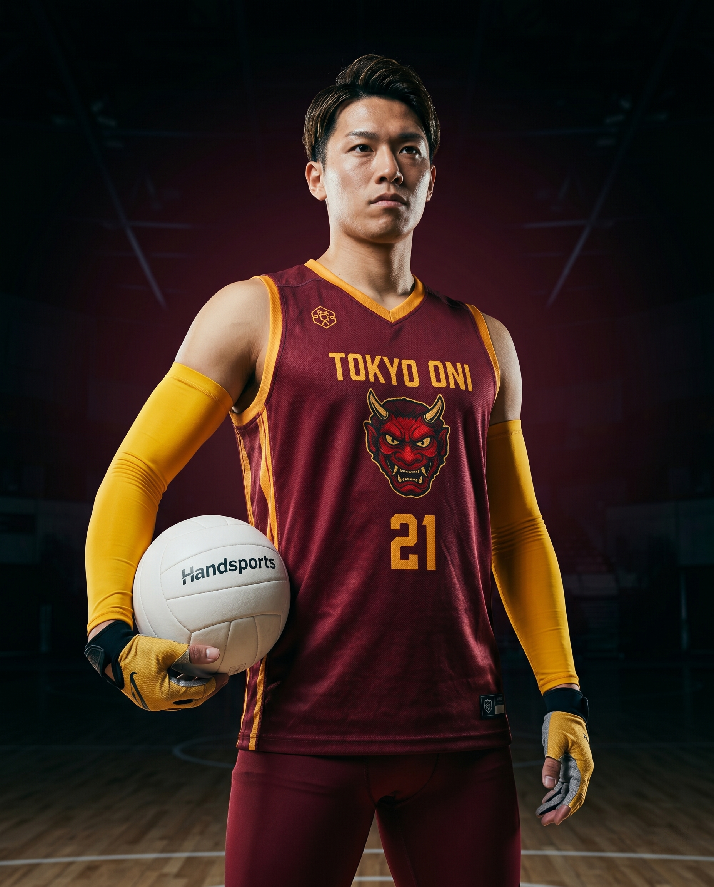

Останні 5 матчів
Game log.
2026.04.20
 vs Shanghai
vs ShanghaiW 82-76
DST5
BLK2
2026.04.15
 @ Madrid
@ MadridL 76-84
DST3
BLK1
2026.04.11
 vs Taipei
vs TaipeiW 91-78
DST4
BLK1
2026.04.05
 @ Bangkok
@ BangkokW 95-82
DST5
BLK2
2026.04.01
 vs Osaka
vs OsakaW 88-80
DST4
BLK1

| Сезон | Команда | GP | MIN | DST | BLK | AST |
|---|---|---|---|---|---|---|
| 2026 | Tokyo Oni · T1 | 12 | 28.7 | 4.2 | 1.1 | 2.8 |
| 2025 | Tokyo Oni · T1 | 28 | 26.2 | 3.8 | 0.9 | 2.3 |
| 2024 | Tokyo Oni · T1 | 18 | 19.4 | 2.6 | 0.6 | 1.8 |
vs Shanghai@ Madridvs Taipei@ Bangkokvs OsakaВикликає локальну зону спотворення повітря довкола опонента — теплове марево, що зменшує точність кидка суперника на ~14%. Видиме пульсуюче жовте сяйво навколо його рук.
Найефективніший у триочковій зоні на чужому полі. Активація до 6 секунд безперервно, затим 10-секундний кулдаун.
Народився у Саппоро 2000 року. Фізик-інженер за освітою (Токійський Технологічний, 2022). Пігмент пробудився у 19 під час лабораторного експерименту з термодинаміки — помітив, що прилади фіксували неочікувану теплову аномалію біля нього.
У 22 перекваліфікувався на Handsports після виступу на Intel Science Fair. Перший контракт з Tokyo Oni — $1.2M у 2024 сезон. Поступово виріс до стартового складу.
Відомий тим, що проводить math-stream на Twitch у вихідні (12K підписників) — розв'язує задачі по фізиці пігментних активацій.